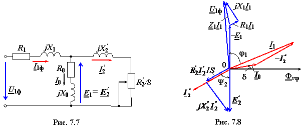
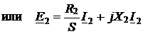

На рис. 7.7 изображена схема замещения одной фазы АД, на которой элементы R0 и Х0 − соответственно активное и реактивное сопротивления ветви намагничивания. Схема замещения позволяет проанализировать работу АД в различных режимах по известным его параметрам. Для этой цели составляют систему уравнений по первому и второму законам Кирхгофа, решив которую, можно аналитически определить неизвестные величины.
|  |
Итак, для схемы замещения (см. рис. 7.7) можно записать:
(7.5)


− уравнение токов, причём ток I0 холостого хода двигателя составляет (20...40) % от номинального тока статора;
(7.6)
− уравнение электрического состояния для фазы статора;
 (7.7)
− уравнение электрического состояния
для фазы ротора.